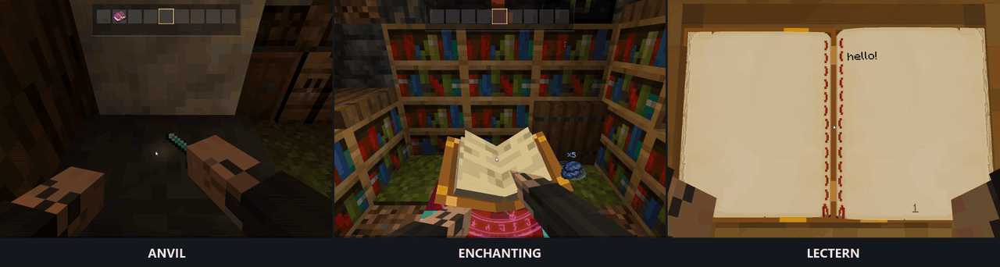

Cinematic Interactions
Forge. Enchant. Read. Three interactions, directly in the Minecraft world.
1920 × 512 · 60 fps · 6.8-second loop · source colors preserved
Preview the animated GIF

1280 × 342 · 12 fps · infinite loop
Embed the WebM in a Modrinth description
Paste the following HTML directly into the description text, with Preview turned off.
<video src="https://dcvke.github.io/cinematic-media/showcase-three-scenes.webm" poster="https://dcvke.github.io/cinematic-media/showcase-three-scenes-poster.jpg" autoplay loop muted playsinline controls width="1920"></video>